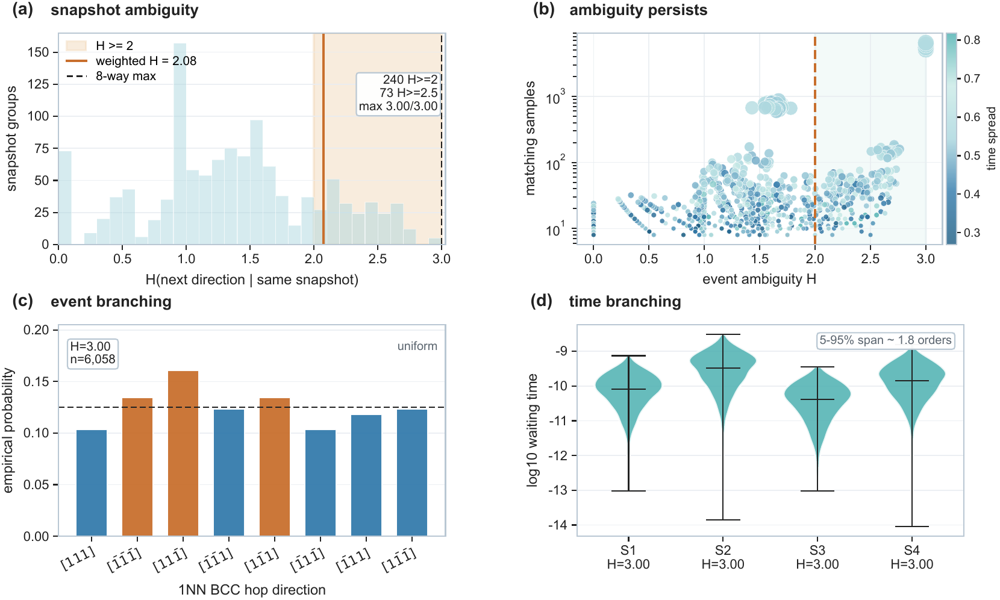
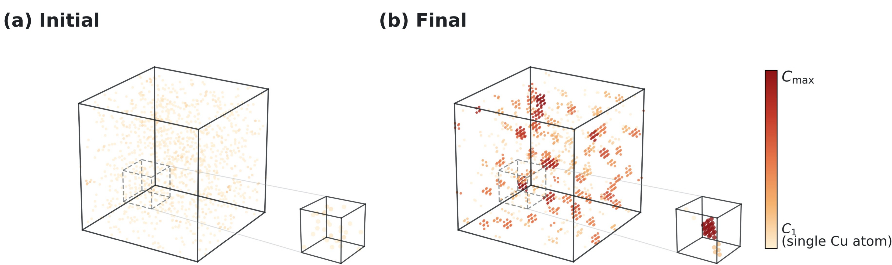
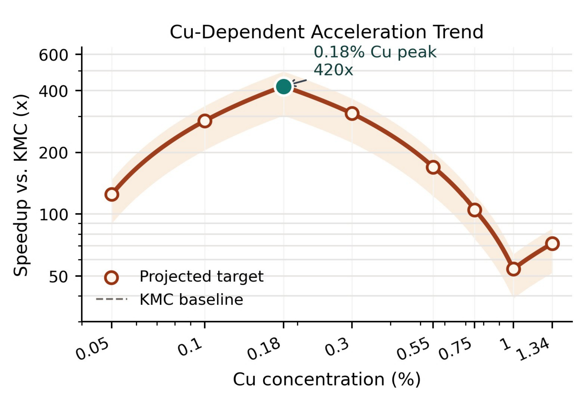
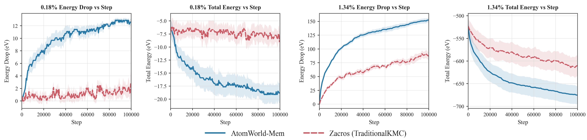
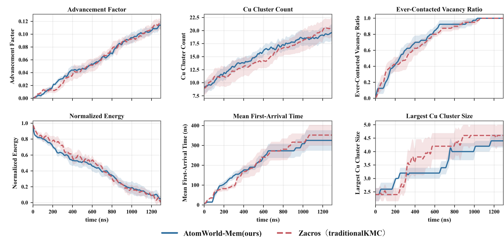
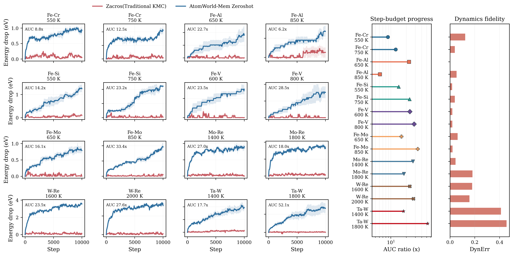

Memory-restored world state. Combine spatial keyframes, recent legal-event history, and recurrent structural memory to infer hidden evolutionary context.
NeurIPS 2026
AtomWorld-Mem
Memory-Restored World States for Long-Horizon Atomistic Evolution
1Sichuan University, Chengdu, China
2Institute of Computing Technology, Chinese Academy of Sciences, Beijing, China
3School of Computer Science, Peking University, Beijing, China
4Institute for AI Industry Research (AIR), Tsinghua University, Beijing, China
†Equal contribution · ‡Corresponding author
News
AtomWorld-Mem has been accepted at NeurIPS 2026! 🎉
01
Introduction
High-fidelity atomistic evolution over long timescales requires more than the current crystal configuration. Conventional Kinetic Monte Carlo (KMC) advances a system through physically admissible local events and updates time from transition rates. Although this preserves a physically grounded event space and clock, an instantaneous rate does not reveal whether an event is a reversible local fluctuation or a transition with persistent structural consequences. Under a practical event budget, simulation effort can therefore remain trapped in locally metastable motion while rare but consequential transitions are delayed.
The deeper issue is snapshot ambiguity. Locally identical observations can arise from different dynamical histories, branch into different future-event distributions, and exhibit markedly different waiting-time scales. A static atomistic snapshot is therefore not always a sufficient predictive state for long-horizon evolution.

AtomWorld-Mem formulates this as a memory-based world-state restoration problem. It treats the evolving alloy as a partially observed AtomWorld: spatial encoders write multi-scale atomistic keyframes, short-term event memory captures recent transition competition, and long-term recurrent memory accumulates slower structural context. The restored latent state is then used to prioritize only simulator-provided legal vacancy-mediated exchanges. Event legality, atomic execution, and residence-time updates remain governed by the underlying KMC simulator.
Streaming evolution

02
Highlights
Multi-scale atomistic keyframes. Encode a vacancy-centered graph over structured 1NN-4NN shells together with sparse long-range defect tokens.
Legal-event prioritization. Score only physically admissible vacancy exchanges; the policy never generates unconstrained atomic moves.
Shared event-time hazards. Use one memory-conditioned hazard field for event preference and expected waiting-time reasoning, regularized by base KMC rates.
Matched-budget evaluation. Start methods from matched initial-state families and execute equal numbers of legal KMC events.
Transfer across AtomWorlds. Apply the learned state-restoration mechanism zero-shot to 16 unseen BCC alloy-temperature domains.
03
Results
The main experiments study vacancy-mediated Fe-Cu evolution. Unless otherwise stated, all methods start from matched initial-state families and execute the same number of legal vacancy-mediated events, isolating event-prioritization quality from rollout length.
Main results under matched legal-event budgets
| Method | AF at 0.18% Cu ↑ | DynErr ↓ | AF at 1.34% Cu ↑ | DynErr ↓ |
|---|---|---|---|---|
| Traditional KMC | 1.00× | 0.000 | 1.00× | 0.000 |
| Energy-Greedy KMC | 11.03× | 0.466 | 2.16× | 0.371 |
| Snapshot-only AtomWorld | 66.19× | 0.318 | 11.13× | 0.299 |
| AtomWorld-Mem | 420.05× | 0.221 | 51.25× | 0.262 |
At 0.18% Cu, memory raises AF from 66.19× for snapshot-only AtomWorld to 420.05×, while reaching an aggregation degree of 0.432 and an Arrival Hit rate of 85.5%. At 1.34% Cu, AF rises from 11.13× to 51.25×, with aggregation degree 0.367 and Arrival Hit 80.9%. These gains show that memory improves both scalar progress and long-horizon event-prioritization quality.
- AF
- Step-to-target acceleration relative to Classic KMC under an equal legal-event budget.
- Agg. Degree
- Degree of Cu aggregation reached by the trajectory.
- Arrival Hit
- Vacancy arrival at aggregation-relevant Cu clusters.
- TimeErr
- Log expected waiting-time mean absolute error.
- DynErr
- Physical-time-aligned normalized deviation from reference KMC dynamics.
Acceleration across Cu concentrations

Fixed-budget energy evolution

Restored-state fidelity and correctness
Fast progress alone is insufficient: a policy could improve energy descent through an unphysical local shortcut. The stricter test is whether its rollout remains aligned with reference dynamics in physical-time space across energetic, structural, and vacancy-transport observables.

Zero-shot transfer
Without finetuning, AtomWorld-Mem is evaluated on 16 unseen domains spanning Fe-Cr, Fe-Al, Fe-Si, Fe-V, Fe-Mo, Mo-Re, W-Re, and Ta-W. It improves fixed-budget energy-drop trajectories in every evaluated domain, with a median AUC gain of 22.9× and a maximum of 52.1×. Dynamics error remains small or moderate for most domains, with larger deviations concentrated in refractory systems.

04
Method
State-restoration view: partial atomistic observations are written into keyframes; memory integrates those keyframes with past legal events; the restored state ranks the current legal KMC event set.
- 1
Keyframe Writer
A graph encoder summarizes dense short-range topology around each vacancy, while an attention encoder captures sparse long-range defect context. Their fused keyframe is a spatial write into memory, not a complete dynamical state.
- 2
Latent-State Memory
Short-term memory summarizes recent legal events, vacancy backtracking, and local transition competition. Long-term recurrent memory accumulates slower aggregation tendencies, defect-evolution trends, and structural bias.
- 3
Legal Event Scorer
Each admissible event is represented by its event-local structure, hop direction, and energetic or kinetic features. A memory-conditioned score is fused with the base KMC rate and an energy-aware prior.
- 4
Physics-Guided Policy Learner
Recurrent PPO optimizes long-horizon progress while a soft physics teacher and event-time consistency objective regularize the learned policy toward the local physical hazard structure.
Restored-state time consistency
AtomWorld-Mem does not replace the KMC clock with an independent time predictor. At every visited state, the simulator computes the residence-time increment from the sum of base legal-event rates. In parallel, the model interprets its fused legal-event scores as event-wise hazards: their normalized values define the policy, while their sum provides an expected waiting-time readout.
Physical scope
- Actions remain inside the simulator-defined legal event set.
- Atomic updates are executed by the KMC environment.
- Physical time follows the standard KMC residence-time rule.
- The learned policy intentionally biases the trajectory distribution.
05
Scope and limitations
The current experiments focus on vacancy-mediated evolution in BCC alloys. Extending AtomWorld-Mem to richer material classes, more complex event catalogs, stronger clock-consistency objectives, and more expressive memory mechanisms remains future work. The present evidence supports efficient and transferable legal-event prioritization, not an exact kinetics-preserving replacement for passive KMC.
06
Quickstart
Use Python 3.10 or 3.11. Create an isolated environment, clone the repository, and install the project in editable mode.
Installation
git clone https://github.com/RSIScience/AtomWorld-Mem.git
cd AtomWorld-Mem
python -m venv .venv
source .venv/bin/activate
python -m pip install --upgrade pip
python -m pip install -e .On Windows PowerShell, activate with .venv\Scripts\Activate.ps1. PyTorch Geometric extensions must match the installed PyTorch/CUDA combination.
Run lightweight CPU tests
python -m pip install -e ".[dev]"
python -m pytest -qTrain AtomWorld-Mem
python train.py \
--algorithm_name rmappo \
--scenario_name single_event_kmc \
--experiment_name example \
--lattice_size 50 50 50 \
--lattice_cu_nums 125 \
--lattice_v_nums 4 \
--temperature 663 \
--episode_length 10000 \
--num_env_steps 100000 \
--no_wandbEvaluate a saved checkpoint
python evaluate.py \
--algorithm_name rmappo \
--scenario_name single_event_kmc \
--model_dir results/KMCEnv/single_event_kmc/rmappo/example/run1/models \
--lattice_size 50 50 50 \
--lattice_cu_nums 125 \
--lattice_v_nums 4 \
--temperature 663 \
--no_wandb07
Citation
If you find AtomWorld-Mem useful in your research, please cite:
BibTeX
@inproceedings{luo2026atomworldmem,
title = {{AtomWorld-Mem}: Memory-Restored World States for Long-Horizon Atomistic Evolution},
author = {Luo, Tian and Zhang, Ruge and Han, Haozhi and Chen, Yifeng and Zhang, Yunquan and Liu, Yunxin and Cao, Ting and Li, Kun},
booktitle = {Advances in Neural Information Processing Systems},
year = {2026},
eprint = {2609.31133},
archivePrefix = {arXiv},
primaryClass = {cs.AI},
doi = {10.48550/arXiv.2609.31133},
url = {https://arxiv.org/abs/2609.31133}
}